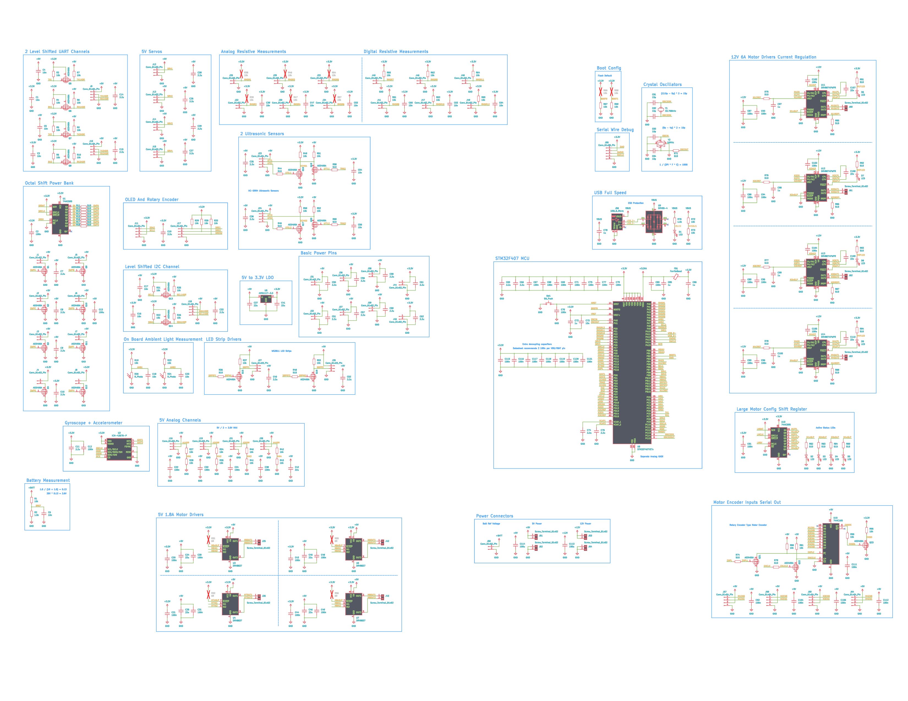
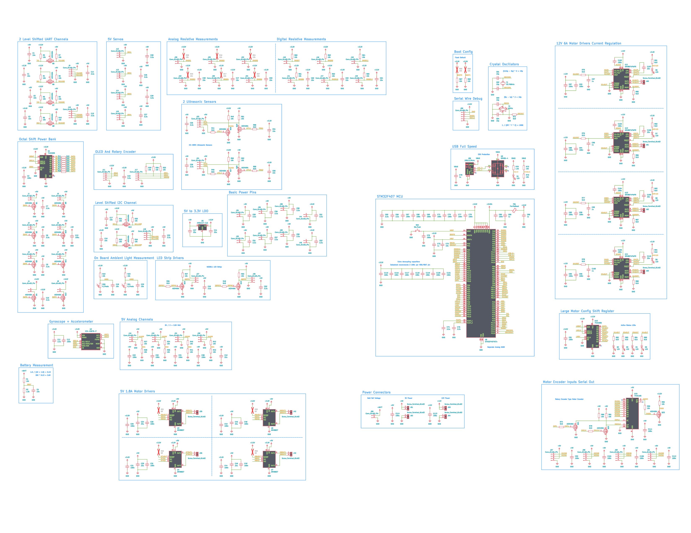
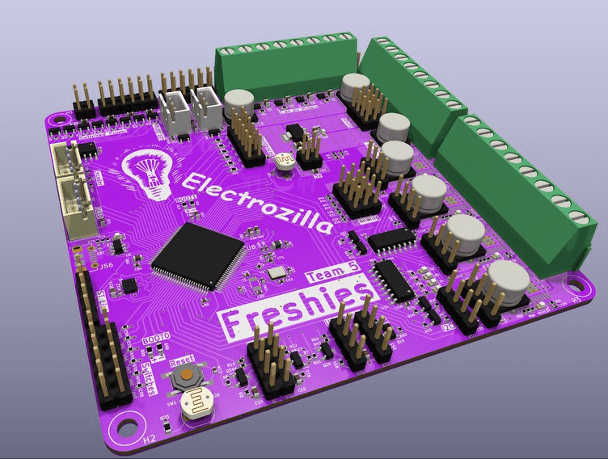
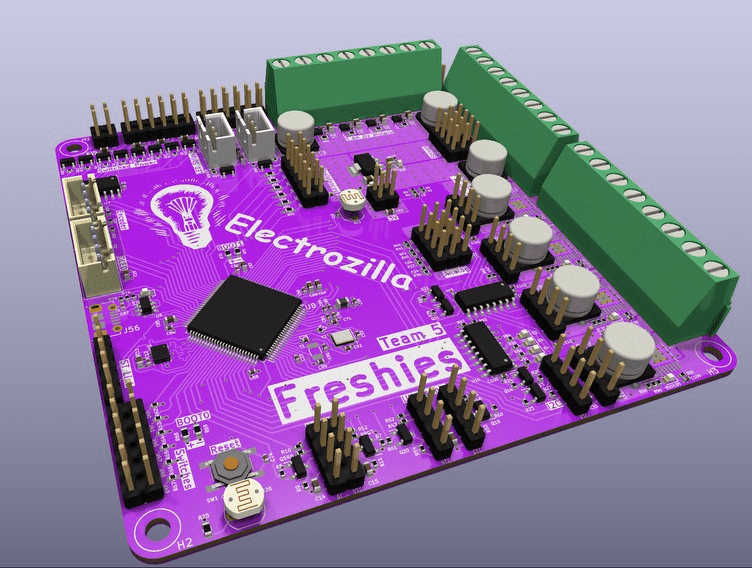

MASLAB Team 5
Miguel Flores-Acton, Anshul Gupta, Andy Yu, Advay Goel
The first version of the wheel assembly is made in OnShape.
The first iteration of the robot base is made, and the new wheel assembly design is tested.

Different bearing mounts and example blocks are made in OnShape. We start getting familiar with OnShape variables.


The gate mechanism is made and animated in OnShape.

The schematic for the custom PCB is drafted. KiCAD is eventually chosen over Altium.

The peripherals are configured, and the pins are assigned.
 

The component placements are drafted and finalized along with the routing. A silkscreen layer is added before the board is ordered.


 

The team GitHub is created and the PCB files are put into its first repository.
STM32CudeIDE is automatically configured for the STM32 chip on the PCB.
The official start of MASLAB. Additional parts are created using CAD, and we start working with OpenCV after connecting the NUC to a monitor.

A plethora of parts are printed and picked up. The first iteration of the chute is also visualized in OnShape.


The lift mechanism is created and animated with CAD. The custom PCB arrives.


We test our PCB, laser cut our base plate, and realize that HSV works better for us than RGB.

More parts are 3D printed and laser cut, enabling us to assemble a good portion of the robot. The lifting mechanism moves.


The gate is mounted and tested against different cube orientations for its correction ability. We test our OpenCV code with a camera and gather test images/videos. Miguel continues his work with the PCB in STM32CubeIDE.

We decide to have two chutes/stackers and the preliminary design is made in OnShape. The camera is mounted and articulated, which prompts us to continue testing our OpenCV code.


Our OpenCV doesn't do well when blocks overlap/are close to each other. We choose to ignore that case. The first block lifter design is made, and the stacker mount is printed for the first of too many times.

After laser cutting the rails, the "sort by turning" method we envisioned is shown to be feasible. All of the baseline C code is written.

The robot is able to perform actions with crude movement code.
The movement code is continuously refined in C, the CAD is "finalized" multiple times, more parts are manufactured, and a gyroscope is implemented.
The robot runs its lifting procedure, the stacker mount is printed for the fourth time, and parameters are fine tuned.